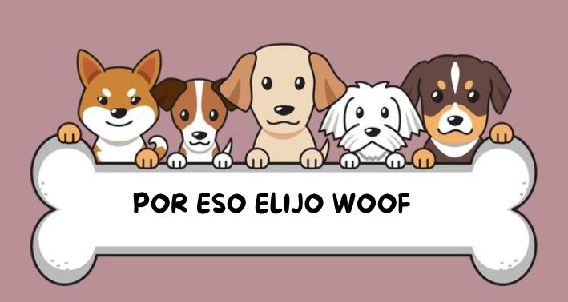
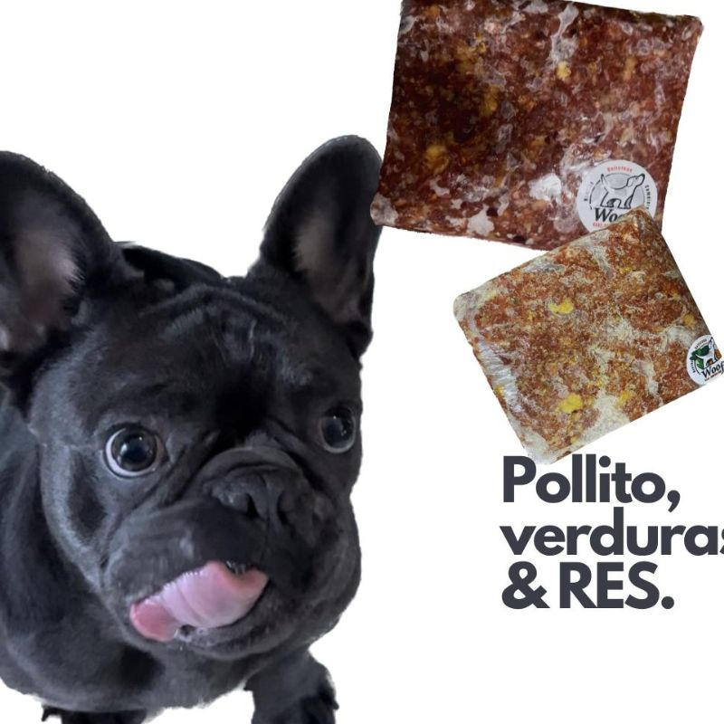
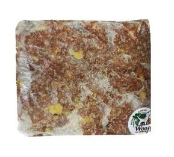
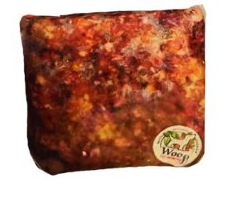
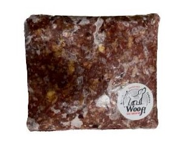
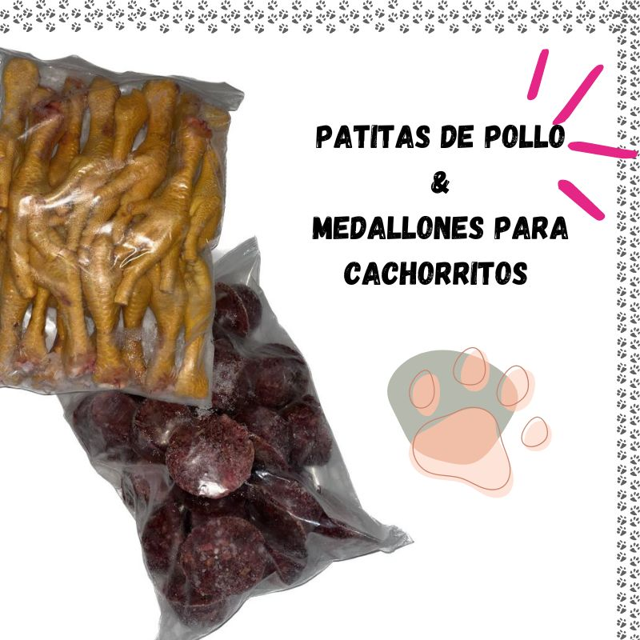
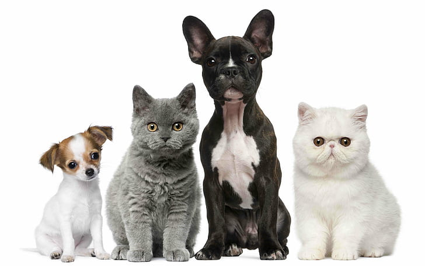

Tu Mejor amigo se merece lo mejor! La salud de tu mascota si importa!

SABIAS QUE?
A primera vista no necesitamos ser científicos para saber que algo con menos
pesticidas y que no está genéticamente alterado es más sano. De acuerdo con un estudio de la
Universidad de Newcastle sobre vegetales orgánicos, se puede confirmar que estos sí tienen un impacto
positivo en la salud pues tienen niveles más altos de antioxidantes y niveles más bajos de pesticidas. Los antioxidantes ayudan a reducir el riesgo de enfermedades como el cáncer.
Son producidos de manera natural por las plantas para protegerse de pestes y enfermedades, sin embargo, cuando les ponen pesticidas,
las plantas ya no necesitan generarlos para defenderse. Así que sí vale la pena pensar en comprar nuestros productos orgánicos para tu perro.
En primera porque ya se ha comprobado que sí hay beneficios a la salud y en segunda porque es un método que cuida del ambiente, de los recursos
y que promueve un trato decente y digno para los animales. Si bien aún no es una tendencia generalizada en la comida de perros pues no está regulado como tal
por los gobiernos, aquí puedes encontrar algunos premios orgánicos, comida orgánica y ayudar a que una parte de la dieta de tu perro sea más sana.

Zanahoria

1Kg $50.oo c/u
Un kilo de carne con zanahoria y calabaza. Rico en Omega.
Betabel

1Kg $55 c/u
Un kilo de carne con betabel y calabaza Rico en calcio.
Carne

1Kg $60 c/u
Un Kilo de carne/Pata de pollo y vísceras de pollo Rico en Proteína.
Patitas de pollo y Medallones

1Kg $50 c/u
20 patitas de pollo sin uñas. Perfectas para premiarlos! Un Kilo en medallones. Para aquellos que son todos unos bebes!
Contactanos!
Demuestrale a tu animalito que lo amas con una excelente alimentacion.Ellos nos dan lo mejor, asi que se merecen lo mejor!